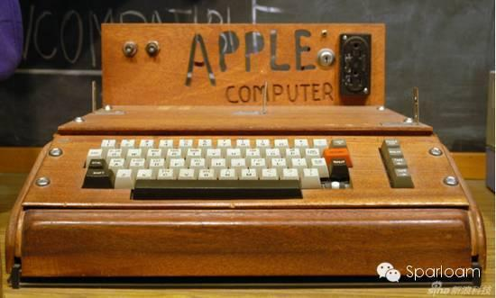
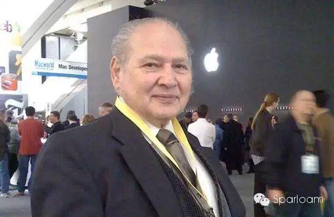
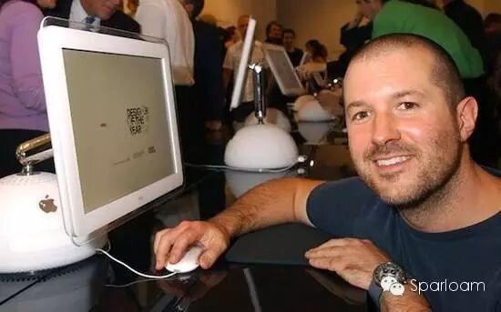
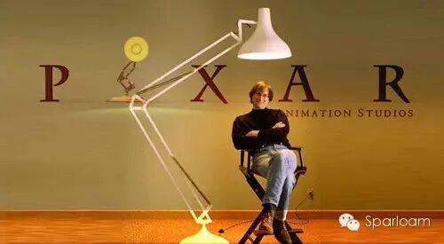
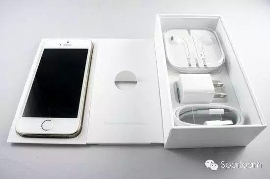

使用小程序
自苹果1976年成立至今整四十年，你对它的印象是不是只停留在那个被咬了一口而残缺的苹果？还是说每年发布会后，果粉争相排队购买新品的场景？你对它的高管又有何了解，除了乔布斯和库克，你还知道谁？40年，一家公司发展到现在，发生过的风风雨雨怎么可能只有几款产品那么少？
第一台电脑计算能力和计算器相当

他们销售的第一台计算机在乔布斯父母家的车库中组装完成的。苹果I计算机售价为666美元，它的主频只有1兆赫，内存只有8KB。按照现有标准，它只相当于一个动力不足的便携计算器。
该公司于1977年1月3日正式称为苹果电脑公司，并于2007年1月9日改名为苹果公司，总部位于美国加利福尼亚库比蒂诺。
“最昂贵的错误”

当苹果在1980年上市的时候，他们的资金比1956年福特汽车上市以后任何首次公开发行股票的公司都要多，而且比任何历史上的公司创造了更多的百万富翁。在五年之内该公司就进入了世界五百强，这是当时最快的记录。
对于苹果成立的这段历史，大多数人貌似只记得史蒂夫-乔布斯和史蒂夫-沃茨尼亚克，但是第三位联合创始人的名字——罗恩-韦恩(Ron Wayne)，却没有多少人能够记住。
不过值得一提的是，创始人之一的韦恩在苹果公司刚刚开始之后就退出了。得悉乔布斯贷款150,000美元开始第一笔生产之后，韦恩感到如果公司破产，那么他也会承担这笔债务。可能因为缺少冒险精神，或者自己曾经失败的生意给他留下心理阴影，他很快决定把自己10%的股份出售掉。
今天的苹果设计师差点离职

苹果的首席设计官乔纳森-艾维(Jony Ive)基本上负责了苹果所有产品线的设计：从iOS的UI和操作，到硬件设备的外观样式，再到苹果专卖店的陈列布局，甚至新总部大楼的建筑蓝图，无一不出自乔纳森之手。但今天的苹果首席设计官，在20年前的时候，差一点从乔布斯面前离职。
乔纳森加入苹果时，苹果正值历史上最黑暗的时期，债台高筑，几近破产。绝望的情绪在苹果蔓延开来，乔纳森也深陷其中。乔布斯也在此时回归，他要和乔纳森会面。
失去信心的乔纳森做好了最坏的打算，他甚至已经备好了辞职信。当时苹果的硬件工程高级副总裁 Jon Rubinstein 也出面挽留乔纳森，多方努力后，形势扭转，乔纳森重拾信心，留在苹果。
如今，苹果，为他创造了这样一个职位：CDO(首席设计官)！
皮克斯最喜爱的道具

乔布斯曾在皮克斯工作过作为乔布斯投资的另外一家公司，皮克斯少不了在自家影片里面安插苹果的产品。如果你看电影够仔细，你就会发现：《玩具总动员》中出现的电脑是iMac，《汽车总动员》里有辆白色的赛车喷着苹果的Logo，就连《机器人总动员》这种发生在未来的故事，机器人瓦力的开机声都是经典的Mac开机音乐。
而且就连皮克斯现在的大东家迪士尼，动画片里的“水果”道具也越来越多了。如果你看过最近热映的《疯狂动物城》，肯定不会忘记到处出现的iPhone 5s、iPod Nano 6和iPad Air2的——尽管导演把它们的Logo换成了啃了一口的胡萝卜。
痴迷于包装设计的公司

苹果对于产品细节的关注延伸到了它的包装上，甚至在苹果位于加利福尼亚州丘珀蒂诺的总部，还有一个神秘的办公间，专门用于研究包装。
包装设计师花费了无数时间在这件特殊的房间里无数次地打开包装盒，试图让这些产品包装能够在消费者第一次打开时激起他们的正面情感反应。在亚当-拉辛斯基(Adam Lashinsky)的新书《苹果内幕》(Inside Apple)中，他描述了苹果对于包装细节的关注和痴迷。
“包装设计师会一个接一个设计和测试各种各样的箭头、颜色和胶带，从而清楚明白地指导消费者撕下iPod包装盒上方的不易察觉的小贴纸，把包装做对做好是设计师最痴迷的事情。”
虽然很多高科技公司在历史的长河中不是凋零就是日趋平庸，但是苹果却比以往任何时候都更加引人注目。祝苹果——这个顶着光环的科技巨头，40岁生日快乐！
编辑/高星华